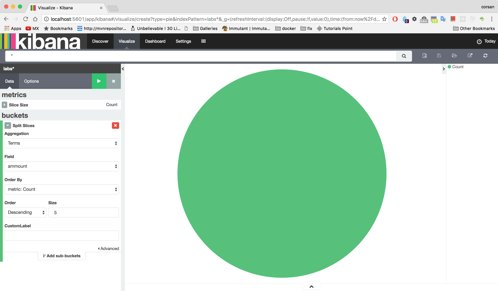
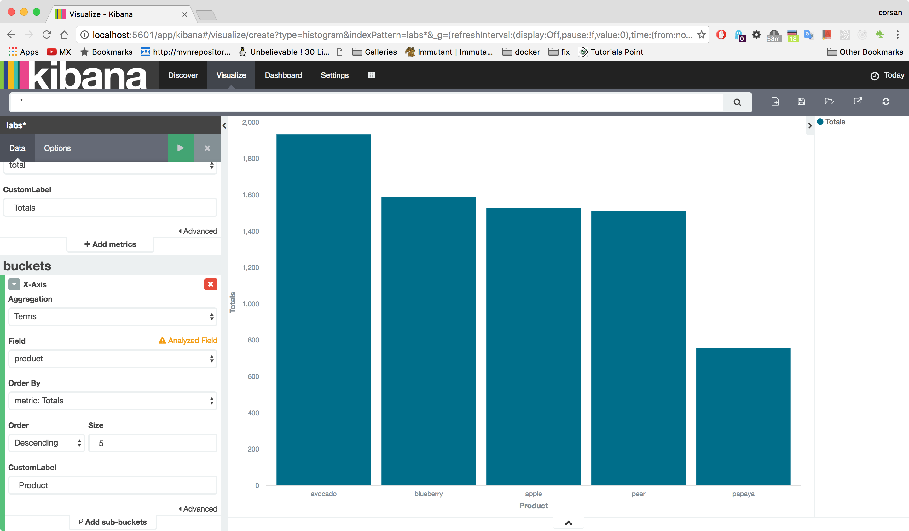
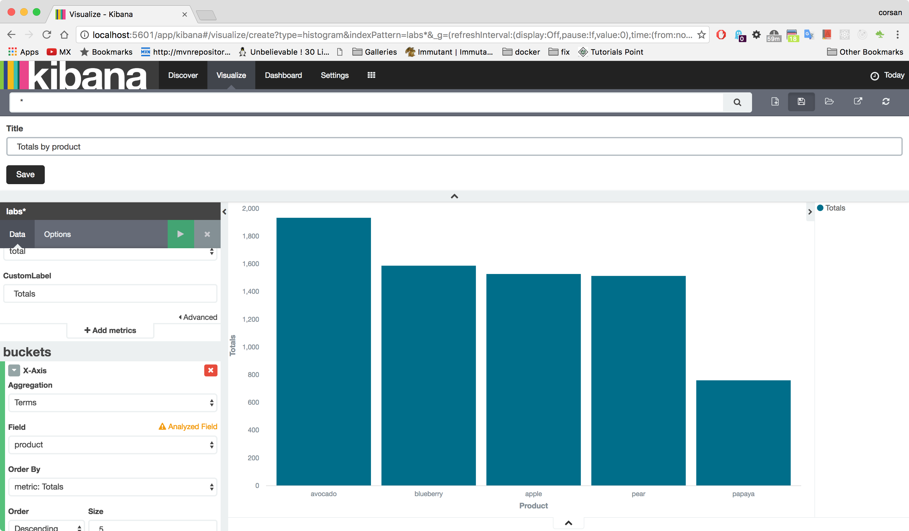
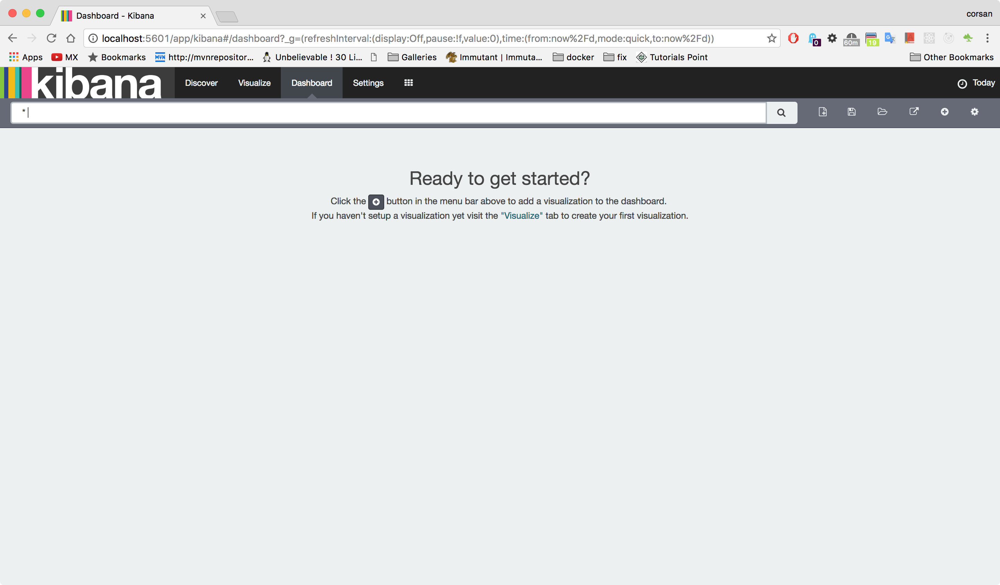

Guía que muestra como integrar Caudal con ElasticSearch y Kibana
Requerimientos
- Haber completado satisfactoriamente Lab 4: Estadísticas
Estableciendo un streamer enriquecedor de eventos
Cambia el actual directorio al proyecto caudal-labs
$ cd caudal-labs/
Edita el archivo config/caudal-config.clj para configurar un streamer que transforma los mensajes entrantes y los envia a una base de datos Elasticsearch
config/caudal-config.clj (ns caudal-labs)
(require '[mx.interware.caudal.io.elastic :as elastic])
(require '[mx.interware.caudal.streams.common :refer :all])
(require '[mx.interware.caudal.streams.stateful :refer :all])
(require '[mx.interware.caudal.streams.stateless :refer :all])
(defn calculate-iva [event]
(let [price (:price event)
ammount (:ammount event)
sub-total (* ammount price)
iva (* 0.16 sub-total)
total (+ sub-total iva)]
(assoc event :sub-total sub-total :iva iva :total total)))
(defsink streamer-1 10000
(smap [calculate-iva]
(printe ["Transformed event : "])
(elastic/elastic-store! ["http://localhost:9200/" "labs" "sales"])))
(deflistener tcp-listener [{:type 'mx.interware.caudal.io.tcp-server
:parameters {:port 9900
:idle-period 60}}])
(wire [tcp-listener] [streamer-1])
Iniciando Elasticsearch
Abre una nueva terminal y cambia del directorio actual al que contiene la instalación de Elasticsearch
$ cd /opt/elasticsearch-2.4.0
Inicia la base de datos Elasticsearch
$ bin/elasticsearch
[2017-01-23 17:20:06,303][INFO ][node ] [Snowbird] version[2.4.0], pid[65564], build[ce9f0c7/2016-08-29T09:14:17Z]
[2017-01-23 17:20:06,304][INFO ][node ] [Snowbird] initializing ...
[2017-01-23 17:20:06,985][INFO ][plugins ] [Snowbird] modules [reindex, lang-expression, lang-groovy], plugins [], sites []
[2017-01-23 17:20:07,016][INFO ][env ] [Snowbird] using [1] data paths, mounts [[/ (/dev/disk1)]], net usable_space [13.9gb], net total_space [232.6gb], spins? [unknown], types [hfs]
[2017-01-23 17:20:07,016][INFO ][env ] [Snowbird] heap size [989.8mb], compressed ordinary object pointers [true]
[2017-01-23 17:20:07,017][WARN ][env ] [Snowbird] max file descriptors [10240] for elasticsearch process likely too low, consider increasing to at least [65536]
[2017-01-23 17:20:09,142][INFO ][node ] [Snowbird] initialized
[2017-01-23 17:20:09,142][INFO ][node ] [Snowbird] starting ...
[2017-01-23 17:20:09,225][INFO ][transport ] [Snowbird] publish_address {127.0.0.1:9300}, bound_addresses {[fe80::1]:9300}, {[::1]:9300}, {127.0.0.1:9300}
[2017-01-23 17:20:09,229][INFO ][discovery ] [Snowbird] elasticsearch/owhh9lBMT5mpFtEG43_XoA
[2017-01-23 17:20:12,269][INFO ][cluster.service ] [Snowbird] new_master {Snowbird}{owhh9lBMT5mpFtEG43_XoA}{127.0.0.1}{127.0.0.1:9300}, reason: zen-disco-join(elected_as_master, [0] joins received)
[2017-01-23 17:20:12,283][INFO ][http ] [Snowbird] publish_address {127.0.0.1:9200}, bound_addresses {[fe80::1]:9200}, {[::1]:9200}, {127.0.0.1:9200}
[2017-01-23 17:20:12,283][INFO ][node ] [Snowbird] started
[2017-01-23 17:20:12,366][INFO ][gateway ] [Snowbird] recovered [5] indices into cluster_state
[2017-01-23 17:20:13,924][INFO ][cluster.routing.allocation] [Snowbird] Cluster health status changed from [RED] to [YELLOW] (reason: [shards started [[.kibana][0]] ...]).Elimina el indice labs de Elasticsearch
$ curl -XDELETE 'http://localhost:9200/labs*/'
{"acknowledged":true}$
Alimentando el streamer de eventos
Restaura Caudal para aplicar los cambios en la configuración.
$ ./bin/start-caudal.sh -c ./config/caudal-config.clj
Verifying JAVA instalation ...
...
17:24:45.772 [main] INFO mx.interware.caudal.core.starter-dsl - {:loading-dsl {:file ./config/caudal-config.clj}}
17:24:47.893 [main] INFO mx.interware.caudal.io.tcp-server - Starting server on port : 9900 ...Abre otra terminal y envia a través del canal tcp los eventos como se muestra a continuación:
$ telnet localhost 9900
Trying ::1...
Connected to localhost.
Escape character is '^]'.
{:tx "sale", :product "pear", :price 37.3, :time #inst"2017-01-16T19:14:50.522-00:00", :ammount 1}
{:tx "sale", :product "pear", :price 37.3, :time #inst"2017-01-16T19:14:50.596-00:00", :ammount 2}
{:tx "sale", :product "papaya", :price 20.5, :time #inst"2017-01-16T19:14:50.622-00:00", :ammount 4}
{:tx "sale", :product "mango", :price 23.0, :time #inst"2017-01-16T19:14:50.659-00:00", :ammount 5}
{:tx "sale", :product "avocado", :price 52.1, :time #inst"2017-01-16T19:14:50.739-00:00", :ammount 2}
{:tx "sale", :product "pear", :price 37.3, :time #inst"2017-01-16T19:14:50.824-00:00", :ammount 7}
{:tx "sale", :product "avocado", :price 52.1, :time #inst"2017-01-16T19:14:50.864-00:00", :ammount 4}
{:tx "sale", :product "apple", :price 42.5, :time #inst"2017-01-16T19:14:50.901-00:00", :ammount 4}
{:tx "sale", :product "apple", :price 42.5, :time #inst"2017-01-16T19:14:50.935-00:00", :ammount 9}
{:tx "sale", :product "blueberry", :price 65.2, :time #inst"2017-01-16T19:14:51.030-00:00", :ammount 1}
{:tx "sale", :product "papaya", :price 20.5, :time #inst"2017-01-16T19:14:51.074-00:00", :ammount 2}
{:tx "sale", :product "apple", :price 42.5, :time #inst"2017-01-16T19:14:51.148-00:00", :ammount 6}
{:tx "sale", :product "pear", :price 37.3, :time #inst"2017-01-16T19:14:51.245-00:00", :ammount 5}
{:tx "sale", :product "apple", :price 42.5, :time #inst"2017-01-16T19:14:51.341-00:00", :ammount 5}
{:tx "sale", :product "blueberry", :price 65.2, :time #inst"2017-01-16T19:14:51.399-00:00", :ammount 9}
{:tx "sale", :product "avocado", :price 52.1, :time #inst"2017-01-16T19:14:51.456-00:00", :ammount 10}
{:tx "sale", :product "papaya", :price 20.5, :time #inst"2017-01-16T19:14:51.491-00:00", :ammount 4}
{:tx "sale", :product "avocado", :price 52.1, :time #inst"2017-01-16T19:14:51.583-00:00", :ammount 9}
{:tx "sale", :product "blueberry", :price 65.2, :time #inst"2017-01-16T19:14:51.665-00:00", :ammount 8}
{:tx "sale", :product "apple", :price 42.5, :time #inst"2017-01-16T19:14:51.676-00:00", :ammount 4}
{:tx "sale", :product "papaya", :price 20.5, :time #inst"2017-01-16T19:14:51.699-00:00", :ammount 7}
{:tx "sale", :product "pear", :price 37.3, :time #inst"2017-01-16T19:14:51.799-00:00", :ammount 6}
{:tx "sale", :product "pear", :price 37.3, :time #inst"2017-01-16T19:14:51.805-00:00", :ammount 7}
{:tx "sale", :product "blueberry", :price 65.2, :time #inst"2017-01-16T19:14:51.832-00:00", :ammount 3}
{:tx "sale", :product "papaya", :price 20.5, :time #inst"2017-01-16T19:14:51.934-00:00", :ammount 6}
{:tx "sale", :product "pear", :price 37.3, :time #inst"2017-01-16T19:14:51.983-00:00", :ammount 7}
{:tx "sale", :product "mango", :price 23.0, :time #inst"2017-01-16T19:14:51.995-00:00", :ammount 3}
{:tx "sale", :product "avocado", :price 52.1, :time #inst"2017-01-16T19:14:52.095-00:00", :ammount 7}
{:tx "sale", :product "apple", :price 42.5, :time #inst"2017-01-16T19:14:52.186-00:00", :ammount 3}
{:tx "sale", :product "papaya", :price 20.5, :time #inst"2017-01-16T19:14:52.229-00:00", :ammount 9}
...Verifica la bitácora generada por los eventos recibidos
...
17:25:34.674 [NioProcessor-2] INFO o.a.m.filter.logging.LoggingFilter - RECEIVED: HeapBuffer[pos=0 lim=1016 cap=4096: 7B 3A 74 78 20 22 73 61 6C 65 22 2C 20 3A 70 72...]
17:25:34.682 [NioProcessor-2] DEBUG o.a.m.f.codec.ProtocolCodecFilter - Processing a MESSAGE_RECEIVED for session 1
17:25:34.690 [NioProcessor-2] INFO o.a.m.filter.logging.LoggingFilter - RECEIVED: HeapBuffer[pos=0 lim=1024 cap=4096: 7B 3A 74 78 20 22 73 61 6C 65 22 2C 20 3A 70 72...]
17:25:34.690 [NioProcessor-2] DEBUG o.a.m.f.codec.ProtocolCodecFilter - Processing a MESSAGE_RECEIVED for session 1
17:25:34.695 [NioProcessor-2] INFO o.a.m.filter.logging.LoggingFilter - RECEIVED: HeapBuffer[pos=0 lim=1016 cap=2048: 7B 3A 74 78 20 22 73 61 6C 65 22 2C 20 3A 70 72...]
17:25:34.695 [NioProcessor-2] DEBUG o.a.m.f.codec.ProtocolCodecFilter - Processing a MESSAGE_RECEIVED for session 1
Transformed event : {:tx "sale", :product "pear", :price 37.3, :time #inst "2017-01-16T19:14:50.522-00:00", :ammount 1, :caudal/latency 610069, :sub-total 37.3, :iva 5.968, :total 43.268}
17:25:34.699 [clojure-agent-send-pool-1] DEBUG mx.interware.caudal.io.elastic - Storing event(s) into ELS : {:tx "sale", :product "pear", :price 37.3, :time #inst "2017-01-16T19:14:50.522-00:00", :ammount 1, :caudal/latency 610069, :sub-total 37.3, :iva 5.968, :total 43.268}
Transformed event : {:tx "sale", :product "pear", :price 37.3, :time #inst "2017-01-16T19:14:50.596-00:00", :ammount 2, :caudal/latency 628490789, :sub-total 74.6, :iva 11.936, :total 86.536}
17:25:35.315 [clojure-agent-send-pool-2] DEBUG mx.interware.caudal.io.elastic - Storing event(s) into ELS : {:tx "sale", :product "pear", :price 37.3, :time #inst "2017-01-16T19:14:50.596-00:00", :ammount 2, :caudal/latency 628490789, :sub-total 74.6, :iva 11.936, :total 86.536}
Transformed event : {:tx "sale", :product "papaya", :price 20.5, :time #inst "2017-01-16T19:14:50.622-00:00", :ammount 4, :caudal/latency 666548765, :sub-total 82.0, :iva 13.120000000000001, :total 95.12}
...
Transformed event : {:tx "sale", :product "apple", :price 42.5, :time #inst "2017-01-16T19:14:52.186-00:00", :ammount 3, :caudal/latency 1353921330, :sub-total 127.5, :iva 20.400000000000002, :total 147.9}
17:25:36.053 [clojure-agent-send-pool-9] DEBUG mx.interware.caudal.io.elastic - Storing event(s) into ELS : {:tx "sale", :product "apple", :price 42.5, :time #inst "2017-01-16T19:14:52.186-00:00", :ammount 3, :caudal/latency 1353921330, :sub-total 127.5, :iva 20.400000000000002, :total 147.9}
Transformed event : {:tx "sale", :product "papaya", :price 20.5, :time #inst "2017-01-16T19:14:52.229-00:00", :ammount 9, :caudal/latency 1393990461, :sub-total 184.5, :iva 29.52, :total 214.02}
17:25:36.093 [clojure-agent-send-pool-9] DEBUG mx.interware.caudal.io.elastic - Storing event(s) into ELS : {:tx "sale", :product "papaya", :price 20.5, :time #inst "2017-01-16T19:14:52.229-00:00", :ammount 9, :caudal/latency 1393990461, :sub-total 184.5, :iva 29.52, :total 214.02}
...
Verifica el contenido de la base de datos
- Abre una terminal nueva y ejecuta el comando query que se muestra para revisar los eventos previamente procesados.
$ curl -XPOST 'localhost:9200/labs*/_search?pretty' -d '{"query": { "match_all": {} }}'
{
"took" : 54,
"timed_out" : false,
"_shards" : {
"total" : 5,
"successful" : 5,
"failed" : 0
},
"hits" : {
"total" : 30,
"max_score" : 1.0,
"hits" : [ {
"_index" : "labs",
"_type" : "sales",
"_id" : "AVnNpiWjzTntsm6U0JOB",
"_score" : 1.0,
"_source" : {
"ammount" : 1,
"sub-total" : 37.3,
"created-on" : 1485213934701,
"time" : "2017-01-16T19:14:50Z",
"product" : "pear",
"total" : 43.268,
"tx" : "sale",
"price" : 37.3,
"caudal/latency" : 610069,
"iva" : 5.968
}
}, {
"_index" : "labs",
"_type" : "sales",
"_id" : "AVnNpib_zTntsm6U0JOD",
"_score" : 1.0,
"_source" : {
"ammount" : 4,
"sub-total" : 82.0,
"created-on" : 1485213935354,
"time" : "2017-01-16T19:14:50Z",
"product" : "papaya",
"total" : 95.12,
"tx" : "sale",
"price" : 20.5,
"caudal/latency" : 666548765,
"iva" : 13.120000000000001
}
},
...
{
"_index" : "labs",
"_type" : "sales",
"_id" : "AVnNpilazTntsm6U0JOZ",
"_score" : 1.0,
"_source" : {
"ammount" : 6,
"sub-total" : 123.0,
"created-on" : 1485213935959,
"time" : "2017-01-16T19:14:51Z",
"product" : "papaya",
"total" : 142.68,
"tx" : "sale",
"price" : 20.5,
"caudal/latency" : 1261751929,
"iva" : 19.68
}
}, {
"_index" : "labs",
"_type" : "sales",
"_id" : "AVnNpibZzTntsm6U0JOC",
"_score" : 1.0,
"_source" : {
"ammount" : 2,
"sub-total" : 74.6,
"created-on" : 1485213935316,
"time" : "2017-01-16T19:14:50Z",
"product" : "pear",
"total" : 86.536,
"tx" : "sale",
"price" : 37.3,
"caudal/latency" : 628490789,
"iva" : 11.936
}
} ]
}
}
Iniciando el visualizador Kibana
Abre una nueva terminal y cambia el directorio actual a uno que contenga la instalación de kibana.
$ cd /opt/kibana-4.6.0
Inicia el visualizador Kibana
$ bin/kibana
log [13:32:24.931] [info][status][plugin:heatmap@0.1.0] Status changed from uninitialized to green - Ready
log [13:32:24.938] [info][status][plugin:line_sg@0.0.1] Status changed from uninitialized to green - Ready
...
log [13:32:26.665] [info][listening] Server running at http://0.0.0.0:5601
log [13:32:26.719] [info][status][plugin:elasticsearch@1.0.0] Status changed from yellow to green - Kibana index readyAbre la url http://localhost:5601 en un navegador y haz click en Settings.
Cambia el valor a labs* en el campo Index name or pattern y selecciona el valor time en el campo Time-field name.
Haz click en el boton Create.
Creando una visualización Pie chart para los eventos generados
Verifica que el rango de tiempo de las visualizaciones sea correcto.
Haz click en la opción Visualize y entonces en Pie chart
Selecciona la opción From new search.
Haz Click en el tipo de bucket Split Slices
Selecciona Range en la sección Aggregation y ammount en Field. Agrega los cuatro rangos mostrados en la imagen y entonces haz click en Apply changes
Una vez puestos los rangos, se debe guardar la visualización. Para ello haz click en Save Visualization, pon By ammount en el campo Title, entonces haz click en Save.
Creando una visualización Vertical bar chart para los eventos generados
Haz click en la opción Visualize y entonces en Vertical bar chart.

Selecciona la opción From new search option.

Expande Y-Axis en la sección metrics y llena los campos como se muestra a continuación.
Haz click en X-Axis en la sección buckets, llena los campos como se muestra a continuación.

Presiona el botón Apply changes
Una vez llenos los campos, se debe guardar la visualización. Para ello haz click en Save Visualization, pon Totals by product en el campo Title, entonces haz click en Save

Creando un Dashboard
Haz click en la opción Dashboard.

Haz click en el botón + para agregar una visualización.
Selecciona una de las visualizaciones previamente creadas y redimensionala como se muestra a continuación.
Haz click en el botón Save dashboard.

Cambia Sample Dashboard como el nombre para el que acabamos de crear.

El dashboard creado debe aparecer como se muestra en la imagen.